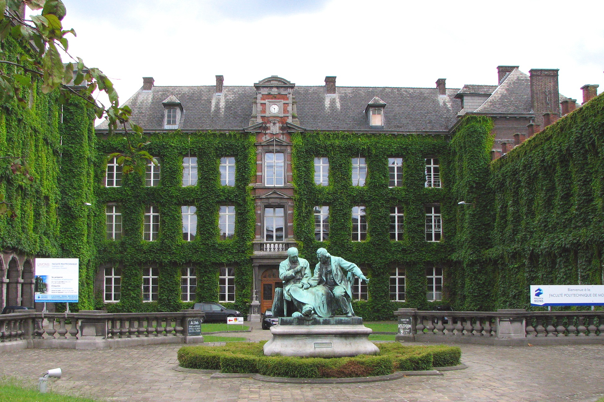
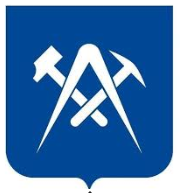
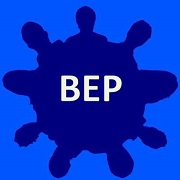

Visite virtuelle
Découvrez votre futur campus !


Si tu es arrivé ici, c'est que tu es intéréssé par une formation scientifique complète
et passionante. Promène toi dans les couloir de ta futur faculté et
prends toutes les informations que tu as besoin pour commencer au mieux ton aventure.
Tu trouveras nottament des informations sur:
Les grilles de cours
les différents campus
Les grilles de cours
les différentes options qui s'offrent à toi en master
Les options de logement
Et bien plus encore...
Cliquer sur la map pour découvrir les lieux !
La Faculté Polytechnique de l’UMONS (Polytech Mons) forme des ingénieurs polytechniciens
innovants et ouverts au monde, depuis 1837! Elle délivre le diplôme de Master Ingénieur civil
dans cinq spécialités : Chimie-Science des Matériaux, Électricité, Informatique et Gestion,
Mécanique et Mines et Géologie ainsi qu’un diplôme de Master Ingénieur civil Architecte
Les larges connaissances scientifiques et les compétences transversales acquises durant le
cursus permettent aux jeunes ingénieurs formés à la Polytech d’exercer des métiers extrêmement
diversifiés dans des environnements variés et stimulants. Tous les diplômes de Polytech Mons
sont reconnus officiellement par l’Etat français et labellisés EUR-ACE au niveau européen.
L’employabilité et la mobilité internationale s’en trouvent encore renforcées.
La FEDE (La Fédérale des étudiants) est composé d'un comité de cinq personnes. Ceux-ci sont des étudiants de la FPMs qui ont été élus par l'ensemble des étudiants membres de la Fédération des Etudiants. Ses rôles sont les suivants:
Voir site pour plus d'infos.
Le BEP est composé de 8 étudiants et fait l’intermédiaire entre les autorités académiques (Mme La Doyenne, Mme. La Vice-Doyenne ainsi que leurs équipes) et les étudiants.Ce sont vos représentants au sein de la Faculté. Les rôles du BEP sont multiples et variés. Ils participent notamment au Conseil de Faculté, assemblée composée des autorités académiques et d’une grande partie du corps professoral qui se réunit tous les mois. Le BEP a la possibilité de donner son avis sur les horaires d’examens, les réformes concernant nos études, etc. Les étudiants qui composent le BEP ont également la possibilité de faire partie de Commissions. L’impact de sa participation sur la vie universitaire est réel. Au sein du BEP, vous avez réellement l’opportunité de faire changer les choses.
Voir groupe Facebook pour plus d'infos.
